1922—Tailored Pockets
Woman's Institute of Domestic Arts & Sciences,
by Mary Brooks Picken
Padding a Dress Form
REMARKS ON FORMS
1. That a dress form is as necessary in a sewing room as a sewing machine is an established fact; it not only is a great aid in the construction of garments, but is a decided convenience in fitting and draping. There was a time when a great many women who could sew very well would never attempt to sew for themselves, for the reason that they could not fit their garments correctly; however, in this day and age, when an exact duplicate can be made of a person's figure, no such obstacle is encountered, for it is possible to make or to procure a dress form so true to a person's shape that a garment will not necessarily have to be put on by the person for whom it is intended until she is ready to wear it.
2. As is true of sewing machines, many varieties of dress forms are in the market today, each with some particularly good feature. Dress forms may be adjustable, pneumatic, or non-adjustable.
Adjustable dress forms, as the name implies, may be made to correspond to individual measures; but to make sure that a form of this kind is correctly adjusted before it is employed, and at the same time get satisfactory results, use must generally be made of a tight lining that exactly fits the individual for whom it is intended. This lining is placed on the form, and then the form is adjusted to fill out the lining.
Pneumatic dress forms are made of rubber or a combination of rubber and cloth, and may be inflated, or filled with air, in much the same manner as an automobile tire. Such forms also require the use of a tight-fitting lining to get the best results. As a rule, the life of pneumatic forms is not very great, as the material of which they are made is subject to rapid deterioration.
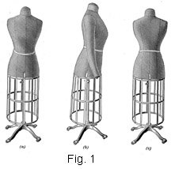Non-adjustable dress forms, or solid forms, as they are sometimes called, are made of paper mache covered with Jersey cloth. A form of this kind can be made to do the same service as an adjustable or a pneumatic form by padding it with cotton batting and then covering it with a tight-fitting lining, as illustrated in Fig. 1, which shows a front view (a), a side view (b), and a back view (c). Solid forms are much less expensive than adjustable or pneumatic forms, and practically no more work must be done to prepare them for use; therefore, it would seem that the advantage lies with the non-adjustable form. Indeed, the claim is made that a solid dress form properly padded is the best, because it is always ready for use and will last indefinitely, whereas, with one of the other kind, some extra work must generally be performed before it can be utilized.
3. The distinct advantage of a dress form is that it eliminates the irksome task of being fitted. It not only saves much time for the woman who makes her own clothes, but enables her to make garments for herself without depending on some one else for fitting. Once a dress form of the correct shape and size is at hand, the best results with the least effort can easily be obtained. Very little thought will enable any person to see how convenient it is in pinning a waist and a skirt together when making one-piece dresses, in making over or repairing dresses, in adjusting trimmings, collars, and belts, in draping garments, in securing just the right individual line, and so on. In most reputable dressmaking establishments, a dress is cut and practically assembled on the dress form before it is fitted on the customer. Thus the style effect is created and decided on so that she will be pleased with the prospects of having a becoming dress or suit.
4. To prepare a dress form in the manner here explained requires considerable patience and time—in some cases, an entire day—if the work is properly done; yet no woman will ever regret the time and effort she spends in padding a dress form for herself or for any other member of her family who has garments made, for it is quite impossible for her to overestimate the value of a dress form that is built up to assume exactly the lines she desires to duplicate.
A dress form made as here described—that is, by padding a form and covering it with a lining—is convenient, in addition to the uses already mentioned, for fitting waists, skirts, coats, and, in fact, nearly all articles of wearing apparel. The waist line gives the correct line for finishing up a waist; and a skirt may be fitted over it with complete satisfaction, as the padding extends down far enough at the hips to secure a perfect fit for a skirt. The neck line and the arm-holes, as well as the center-front, the center-back, and the under-arm lines, are also a convenience in fitting, because they serve as a guide in putting a garment together.
5. Selecting a Solid Form for Padding.—In selecting a solid form to be padded, it should be borne in mind that the form must serve for both the waist and the skirt of a dress. Therefore, one having a standard and base that holds the body part of the form sufficiently high from the floor to permit the skirt to be fitted is very desirable. The body part of the form should receive the most attention, though. As a rule, it should be from 2 to 4 in. smaller than the woman for whom it is intended. For example, if a woman's bust measure is 38 in. and her hip measure is 40 in., a form with a 34- or a 36-in. bust measure and a 36- or a 38-in. hip measure should be selected. This difference in size will permit the form to be covered properly with cotton batting before putting on the lining made to fit the woman's form. Having the solid form smaller than the woman's form is a decided advantage, for the reason that after it is padded and covered it will be soft and pliable—that is, very much like the human form; whereas, if a form is too large in any place difficulty will be encountered in covering it, and it will not serve so well in fitting garments. No attempt should ever be made to pad a form that is as large or larger in any one place than the individual for whom it is intended, for to get it to assume the same lines will be an impossibility.
A woman whose bust is low or flat requires a smaller form in proportion to her measure than does a woman with a prominent bust, for the reason that the form will have to be padded to increase its width and the bust made to correspond with that of the woman for whom the form is made; also, a woman whose hip measure is small in proportion to her bust measure will do well to exercise discrimination in selecting a form for padding so as not to select one with too large a hip measure, for, as a rule, solid forms are made with a hip measure that is large in proportion to the bust measure.
MAKING THE TIGHT LINING
6. Preparing the Pattern.—After the dress form has been selected, the first step in the work of padding it is, as has already been inferred, the making of the tight lining; and the first step in preparing the lining consists in making ready a close-fitting waist pattern having a stock collar. The waist pattern should have either a two- or a three-piece back, the bust measure determining which should be employed. If the length of the pattern below the waist line is not sufficient to reach down over the solid portion of the form, additional length should be provided in the pattern. If arms are desired for the form—and it is advisable to use them—it will be necessary to prepare a two-piece sleeve pattern for them.
7. Placing the Pattern and Cutting the Material. Khaki cloth or tan, gray, or dull-blue galatea of the best quality is most satisfactory for the tight lining, as it does not stretch easily; neither does it show soil. For the body part of the lining for a form of medium size, 2 1/4 yd. of 32-in. material is sufficient, but if two arms are used, then ¾ yd. more is needed, making 3 yd. altogether.
In making any kind of lining that is to fit close to the body, whether it is a tight lining for a dress or a dress form or a tight corset cover, the cutting should be done crosswise of the material. Although cutting in this manner is contrary to the general rules of cutting, it is productive of the best results, for there will then be no danger of the material becoming stretched out of shape in fitting or adjusting, and practically all possibility of splitting will be overcome.
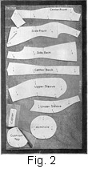8. To prepare the material for the tight lining, fold it, with its right side in, through the center, crosswise, and pin together first the cut ends and then the selvage edges; then, with the selvage edge next to you, place and firmly pin each part of the pattern on the material in the manner shown in Fig. 2. The illustration should be followed very closely in placing and pinning the pattern, and ½ to ¾ in. should be allowed on all edges for seams. Wide seams tend to add firmness and strength to a lining, and they make it set better on a padded form. They also permit changes to be made easily; thus, if a person increases or decreases in size, it is a simple matter to let out or take in the seams.
Another thing to bear in mind in placing a tight foundation pattern on the material is that the waist line of the center-front, the side-back, and center-back pieces should go on a straight, lengthwise thread of the material, while the bust line of the side front should go on a lengthwise thread, as should also the elbow line of the upper and under sleeve portions. The center front of the collar should be placed on a crosswise fold of the material, as is clearly shown in the illustration.
For the top of the dress form and for the armhole openings, it is necessary to have extra pieces of material. Therefore, patterns similar to those shown in the illustration should be placed on the material; these patterns do not have to be of the exact shape shown, but they must be large enough to cover the openings in covering the form. Place the pattern for the cushion top on a single piece of material, and that for the armhole on double pieces, as shown, so as to have one for each armhole.
As will be observed from the illustration, the tight lining for the form is intended to open at the back. Placing the opening at the back is done for convenience, it being a much simpler matter to sew up the lining at the back when it is on the padded form than to sew it up at the front. The collar also comes together in a better line at the back than it does at the front.
9. With the pattern placed and pinned to the material in the manner just explained, the tight lining is ready to be cut out. But before any cutting is done trace the pattern lines very carefully all the way around, tracing up, as well as down, from the waist line, so that there will be no possibility of the pattern slipping; also, trace the waist line in each section of the pattern, as well as the elbow line in the sleeve. Cut the material with great care, allowing for the seams the amount already mentioned and allowing as much material as possible to extend below each section of the waist pattern. The part below each pattern piece should not be cut away until after the lining is on the form, for the lining must be sufficiently long to come down well over the form and be tucked up underneath it.
10. Pinning and Basting.—The next step in making the tight-fitting lining consists in pinning and basting the center-front lines together. Although, in drafting, the pattern for the lining is built from the bust line up and down, it is balanced from the waist line; also, the hip sections are built from the waist line down. Therefore, begin pinning at the waist line and pin up and down, being very careful to pin exactly in the traced lines and to avoid stretching the seams; then replace the pins with basting. For all basting, in making a lining of this kind, No. 40 or No. 50 cotton thread should be used. Basting cotton should be avoided, because, as a rule, it is not strong enough to stand the strain in fitting. In addition, short stitches should be taken in basting so that the seams will not gap in fitting. Next, pin and baste the side-front sections to the side-center fronts, and in basting over the fullest part of the bust be very careful not to permit any wrinkles to creep in. On the front of the side-front section, from the bust line to the waist line, the seam must be stretched a trine so that it will be long enough to meet the waist line of the center-front section. Next, pin and baste the side-back sections to the side of the center-back sections. After the side-front and the side-back seams are basted, pin and baste together the under-arm seams of the side backs and the side fronts, placing their wrong sides together, so that the seams will come on the right side for convenience in fitting, and pinning the seams up and down from the waist line. Then, beginning at the neck, pin and baste the shoulder seams together. In basting the shoulder seams together, press open the side-front and the side-back seams so that they will fit smoothly over the shoulders. As will be remembered, the front shoulder line is drafted a little shorter than the back shoulder line; therefore, the front shoulder will have to be stretched in basting, in order that it will be of the same length as the back shoulder.
11. Next, trim the neck outside the traced lines to within 1/4 in. of the tracing, and then clip the seam allowance in several places so that the neck of the lining will fit comfortably when tried on. Turn the lower edge of the collar over to the wrong side on the traced line and baste it in position. Clip the top edge of the collar in three or four places, and crease the front so that it will turn over smoothly in fitting.
Next, place the wrong side of the under and upper sleeve together and pin the tracings of the outside sleeve seams from the bottom of the sleeve up to the elbow and from the top of the sleeve down to this point, keeping the seams to the right side to permit the sleeve to be fitted in close to the arm. If there is any fulness in the upper sleeve portion at the elbow, it should be adjusted evenly so that it will not form in plaits, but, rather, will be eased in to allow freedom for the elbow. Pin the inside sleeve seams together in the manner directed for the outside sleeve seams, and then baste both seams in the same direction as they were pinned. Finally, run a basting thread along the tracings of the center back and the waist line.
12. Fitting the Tight Lining.—The next important step after pinning and basting consists in fitting the lining. If you are making the lining for yourself, you should have some person who understands the principles of fitting do this work for you. However, if there is no one around who is capable of fitting a garment, you will have to direct some person to do the fitting according to the principles here outlined. In such an event, it will be very necessary for you to stand in front of a mirror, in order that you may see just how the lining fits and at the same time ascertain where the seams will need to be taken in or let out.
In fitting a dress-form lining, a good-fitting corset is a necessity. A light-weight, close-fitting petticoat should be worn with the corset, but by no means should a corset cover be placed over the corset, for it is not possible to secure a perfect fit over undergarments that are the least bit bunglesome; nor is it possible to get an accurate fit over an old corset that has lost its shape on account of too much wear.
13. Put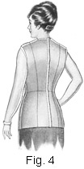 the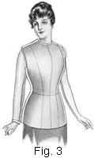 lining on and pull it down well on the figure, as shown in the front view, Fig. 3, and the back view, Fig. 4. Bring the center-back seam together and pin in the tracings, beginning at the neck and pinning down even with the shoulder blades; then begin to pin the waist line together at the center back and continue to pin upwards until the seam is pinned together its full length from the waist to the neck. Then pin from the waist line downwards over the hips.
If necessary in fitting, clip the seam allowance at the neck in several places, taking care not to clip beyond the tracings; also, clip the armhole seam at the front under arm. The arm-hole should fit quite close, but if it appears to be a little too tight, clip it carefully so that the armhole will assume exactly the same line as a dress itself should, and thus be suitable as a guide in fitting the armhole of waists, coats, etc. So that the width of back will remain correct, much care should be exercised in turning in the armhole edges. Next, pin the center front of the collar to the center-front seam of the waist, and then pin in a good, even line around to the back. If the tracing around the neck of the lining itself is not correct, either lower or raise the collar above the tracing, thus securing a perfect neck line. Turn the collar in at the top to the height desired; and remember that it should be a trifle lower in the front than in the back. In nearly every case the upper traced line of the collar will be correct, but it is always well to make sure of this point in fitting, because the height of the collar is a very important feature, especially when high collars are worn. After the height of the collar has been determined, pin the collar together at the center back, drawing it close, but not so close as to make it uncomfortable.
14. Next, fold in the center, crosswise, a piece of linen tape 3/8 to ½ in. wide and 2 or 3 in. longer than the waist measure, place the center of the tape on the center-front seam at the waist line, and then pin it from the center front on each side, in a good, even line, around to the back. If the front and back measurements used in drafting the pattern are correct, the traced waist line will be sufficiently correct to be covered with the tape; however, if the tracing appears to be a little too high, the tape should be allowed to assume the correct line and it should be pinned every 2 or 3 in. so that it will hold in position when the waist is removed from the figure.
In order that all garments fitted over the dress form may be correct, a perfect waist line is very essential. It is therefore well for the person who is being fitted to look in a mirror and then turn around several times to study the waist line and ascertain whether or not it is absolutely correct. At the same time, the shoulder lines should be noticed to see whether the shoulder length is just as it is wanted. A lining that has been carefully traced from a perfectly drafted pattern requires very little fitting—it should fit without a wrinkle; yet, if it is discovered that the shoulders must be taken up a trifle or even let out, there should be no hesitation in making such a change. In fact, any necessary changes in the lining should be made at this time. Very little difficulty is encountered in altering the shoulder and under-arm seams; however, it is well to observe the curved seams. If they bulge out at any place, they should be pinned in enough to give a good line; if they appear to be tight, they should be let out the necessary amount. But in making any changes in the lining, care must be taken that it is not drawn the least bit across the bust; it should set easy and smooth and not draw in any place.
15. Some figures with a very low bust may be hollow through the chest, making it necessary to take the side front seams in a little from the bust up to the shoulder. Such a figure usually has sloping shoulders also, in which event the side-back seams will have to be let out a little from the lower part of the shoulder blades up to the back shoulder seam. For persons having overerect figures, that is, for persons who throw the shoulders back unnaturally, the side-back seams may have to be taken in a trifle from the lower part of the shoulder blades up to the shoulder.
Very square shoulders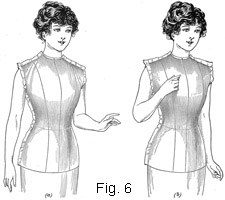 sometimes 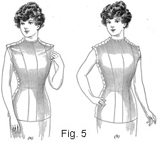cause diagonal wrinkles to form in the lining, as shown in Fig. 5 (a). Such wrinkles may be overcome by lifting the shoulder seam at the neck, as shown in view (b). If the wrinkles are very prominent, open out the shoulder seam and, with the lining adjusted perfectly at the waist line, stand at the side of the figure and with one hand on the back shoulder and one on the front smooth the lining up until all wrinkles have disappeared; then pin the shoulders, placing the pins in very carefully so that a good, even line will be obtained. To correct wrinkles caused by shoulders that slope considerably, as in Fig. 6 (a), adjust the lining properly and lift the shoulder seams on the point of the shoulder, as in (b).
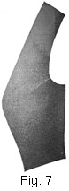16. Should the lining wrinkle much in front when the arms are down, it is too high under the arms. In such a case, the armhole may be trimmed out a trifle, or perhaps just clipping will overcome the trouble. If the lining appears to be a little too full at the front under arm, a small dart should be taken at the armhole, tapering it out toward the bust line, as shown in Fig. 7. As a rule such a change is not necessary, and in any event the dart will be very tiny. Such a small dart should be stitched with great care, so that a wrinkle will not form at the end.
Another point to observe at this time is the manner in which the lining sets, so as to form an idea of how the stitching should be done. If the lining appears to be loose all over, the machine stitching may be done inside the basting; but if it is tight the machine stitching should, of course, be placed outside the basting. It is just such points as these that help to get a perfect-fitting finished lining.
17. Fitting the Sleeves.—After the lining is fitted in the manner just described, the sleeves should be fitted. Slip each sleeve on as shown in Figs. 3 and 4, with the seams to the outside. As the sleeves are to be the arms of the dress form, pin each sleeve in close to the arm itself, not tight enough to draw the flesh, but just enough to obtain the exact outline of the arm. Then turn and pin the lower edges as in the first fitting of a plain-blouse sleeve.
18. Removing the Lining, Stitching, and Finishing. Since the sleeve is fitted closely, it will be necessary to open up the inside sleeve seam from 5 to 6 in. in order to remove the sleeve from the figure. In doing this, place the pins in the upper portion, exactly in the fitted line, so that when the sleeve is laid out on a table the tracing will run in line with the pin marks in the seam line.
Remove the pins from the center back, and as they are removed place them back in the right side in exactly the same places that they were when the waist was pinned together, and thus keep the seam line exact. Pins that are removed from the collar and the waist line should be put back in the same way, also.
19. Next, remove the waist and trace along the pin lines of the shoulder and underarm; then run a basting thread around the neck of the waist at the bottom of the collar and also around the bottom of the waist-line tape. Remove the collar and the waist-line tape from the lining; take out the bastings from the shoulder and under-arm seams; and baste the under-arm seams on the wrong side in the same manner as they were basted on the right side. Turn the center-back seams to the wrong side exactly in line with the pin line that was obtained in fitting.
Next, stitch all the body seams of the lining, beginning at the waist line and continuing up to the shoulder line; then, beginning again at the waist line, stitch down over the hips on each seam. In stitching, the machine stitching should be kept the width of one thread outside the basting, unless, of course, the lining is to be increased or decreased in the manner already mentioned. When the stitching is completed, clip each seam edge 2 in. above and below the waist line and then remove the basting from all the seams that have been stitched.
Next, place the lining on an ironing board, right side down, and press the seams open with a hot iron. In pressing, the fingers of the left hand made wet by dipping them in water should be run along the inside of a seam to spread the edges apart, and as the dampening is proceeded with the fingers should be followed up with the hot iron. The seams must be pressed firmly, so that not one wrinkle will be left in the lining.
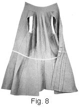20. When the pressing is completed, baste the tape around the waist, using the diagonal basting-stitch so that the tape will not slip when the machine-stitching is done. After the waist-line tape is basted in position, measure it to ascertain whether or not it is exactly the same as the waist measure. If the tape is a little larger than the waist, the tape should be drawn a little tighter; if it is smaller than the waist measure, the under-arm seams may have to be stitched a little deeper at the waist line. After basting the tape in place, stitch on the top and the bottom of it, taking care that none of the edges of the seams of the lining itself fold back under or over each other in doing this, for all the seams must open out flat. Baste the shoulder seams next, seam edge to the wrong side, and then stitch them in place. Remove the basting from these seams and press them flat. Next, baste and stitch the collar on, keeping its lower edge even with the basting line around the neck of the lining that marks the position of the collar; then, turn the armhole edges under in a good, even line and baste them all the way around. The lining should now appear as shown in Fig. 8.
Next, in order to make the collar firm enough to hold its shape, cut a piece of cardboard that will permit of bending without cracking the size of the stock-collar pattern and baste its lower and upper edges to the lower and upper edges of the collar, taking very short stitches on the right side so that they will not show, as they will be left in when the dress form is padded. The lining is now ready to be slipped on the dress form in order to determine how much cotton batting is needed for padding and where most of the padding should be applied.
PADDING THE FORM
21. Padding Required.—To pad a dress form, from one to four rolls of cotton batting are required. The cotton batting does not necessarily have to be the most expensive; the cheaper grades may be used just as well, provided such cotton is smooth enough to go on without becoming rough or lumpy and does not pull apart too readily.
22. Preparing the Form for Padding.—Before the padding of the dress form is begun, the form should receive some attention, so that the work may be accomplished in the simplest possible manner. The skirt part of the form, as a rule, may be easily removed with a screwdriver, and if it can be taken off and put back on without injuring the form this should by all means be done, because the form may then be finished a little neater at the lower edge of the body part. If the dress form has metal caps in the armholes, as is usually the case with stock forms, these caps should be pulled out entirely, using a screwdriver if necessary, so that they will not interfere in any way with the padding.
23. Putting on the Cotton Batting.—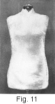The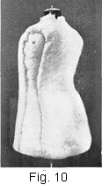 cotton batting is put on the dress form in the following manner: With the back of the dress form toward you, place the end of the cotton well over the left hip and let the bottom of the cotton come to the bottom of the dress form. Hold the cotton carefully so that it will not tear apart, and turn the dress form around until the cotton comes well around to the front; bring it around over the left hip again, and then double it across the back and then well around over the right hip, as at a, Fig. 9. Next, take two pieces of cotton the width of the roll and 12 or 14 in. long, place one over the armhole of each side of the form, bringing the cotton out well over the shoulder, and pin these pieces securely in position to the form, placing the pins 2 or 3 in. apart all the way around each piece, as shown at a, Fig. 10. If the cotton is a little too long, tear or cut off any surplus. Next, take another roll of cotton, and, beginning at the bottom of the back of the form, bring the cotton up over the shoulder; tear it apart at the neck, as shown at a, Fig. 11, so that the neck part of the form may come through the cotton; let the cotton come down to the bottom of the form, as shown; and then trim the length of cotton off across the front.
is put on the dress form in the following manner: With the back of the dress form toward you, place the end of the cotton well over the left hip and let the bottom of the cotton come to the bottom of the dress form. Hold the cotton carefully so that it will not tear apart, and turn the dress form around until the cotton comes well around to the front; bring it around over the left hip again, and then double it across the back and then well around over the right hip, as at a, Fig. 9. Next, take two pieces of cotton the width of the roll and 12 or 14 in. long, place one over the armhole of each side of the form, bringing the cotton out well over the shoulder, and pin these pieces securely in position to the form, placing the pins 2 or 3 in. apart all the way around each piece, as shown at a, Fig. 10. If the cotton is a little too long, tear or cut off any surplus. Next, take another roll of cotton, and, beginning at the bottom of the back of the form, bring the cotton up over the shoulder; tear it apart at the neck, as shown at a, Fig. 11, so that the neck part of the form may come through the cotton; let the cotton come down to the bottom of the form, as shown; and then trim the length of cotton off across the front.
24. With the dress form thus covered with cotton batting, which has been securely pinned in position, slip on it the tight lining, or dress-form covering, to see whether or not sufficient padding has been used. The lining must be put on carefully so as not to pull the cotton out of place; and while the padding at this stage seems to make the form much larger than the person for whom it is intended, the cotton will pack in close and, as a general rule, there will not be too much. Put the lining on over the front of the form and pull it around each armhole over the cotton; then pull it down in the center front, and pin the waist line together at the center back. Then, with one hand inside to hold the cotton down, pull the lining around toward the center back; also, hold the cotton in place across the shoulders while pulling the lining in position. Next, pin the lining together in several places at the center back. After the lining is in position, feel all over the form to find out where it seems too soft or too hard; that is, to learn where more padding could be used or where some could be taken out. Then remove the lining with extreme care, as the cotton is inclined to stick to it, and proceed to make the necessary changes in the padding.
25. For a lining that appears at all loose over the padding, it may be necessary to put another layer of cotton over the entire dress form. If more padding is needed across the hips and not over the bust, tear off the roll of batting two pieces, each the width of the roll and 12 or 15 in. long, and place one piece over each hip. If more padding is required across the bust, if the shoulders must be raised, or if the back must be rounded out to agree with the figure, place small pieces where they are needed, but in so doing be very careful to use small layers of the cotton and to make each layer a little smaller than the first one used, so as to avoid any possibility of wrinkles creeping in. Proceed in this way until the entire form is built up properly.
As the lining must fit over the padded form without a wrinkle in any place, considerable pains should be taken in putting on the last of the padding avoid the formation of lumps or ridges. Plenty of pins should be used in padding, and they should be put in so securely that they will not come out or turn and thus be a hindrance after the lining is put on.
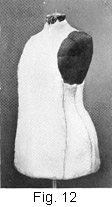26. Next, the armhole pieces should be secured to the form, as shown in Fig. 12. Place each piece in place, draw it very close, and pin it every inch or two from the outer edge so that it will stay in position. Then place a piece of cotton over the head of the form and put the cushion top over it, tying it down well around the neck with a piece of string. As a rule, dress forms are large at the neck when compared with the hips and bust; that is, the neck is not in proportion with these parts. Therefore, in padding out the neck, care must be taken not to put on too many thicknesses of padding, especially around the base of the neck.
27. Securing the Lining to the Padded Form.—After all the padding is on the form and the arm-hole and neck pieces are in position, the tight lining, or form covering, should be put on and secured in place. Press the covering again so that there will not be the least sign of a wrinkle; then put it over the padded form very carefully, smoothing and adjusting it so that it will appear as if the padding were poured into the lining, as in molding. It may seem when pulling the lining together at the center back that the covering is too small to cover the padding well; however, by carefully adjusting, pulling, and working the covering over the cotton, it will be made to come together. In order to make the center back meet properly, it may be necessary to have another person stand in front of the form and push the lining around. In any event, pin the edges of the lining together carefully at this time, preparatory to overcasting.
As padding a form is rather trying to the fingers, especially when stretching and pulling on the lining to get it to come together at the back, it may be well to mention here that washing the hands will relax the muscles to some extent and thus renew their strength.
28. After the lining is pinned together the entire length of the back, remove the body of the dress form from the standard and lay it across the lap or on a table, and then with buttonhole twist or coarse linen thread of the same color as the lining itself proceed to overcast the edges together with short, even stitches, taking care that the edges do not overlap in any place and that neither side of the back becomes stretched. If it is found in overcasting that one side of the back works up a little looser than the other, the form should be turned around and the stitches taken from the opposite side. Stitches taken in this way will have a tendency to draw up any extra fulness that might appear in overcasting.
When the back is overcasted up to the top of the collar, pull the upper edge of the collar up and work the cushion top down tight and smooth, at the same time pinning the top edge of the collar and the cushion together. Next, pull the armhole edges out, stretch them over the armhole pieces, and pin them even. Then replace the pins around both armholes and the neck with overcasting stitches, making them the same as in stitching the center back.
29. After completing the overcasting, begin at the center back and pull the lining down as tight as possible, bringing it under the bottom edge of the form; then, while another person holds the lining in this position, tack the material to the bottom edge of the form, using ordinary tacks and a tack hammer. Turn the form a trifle, pull the lining down again, and tack this part in place. Continue in this way until all the lining is tacked in position at the bottom, placing tacks not more than 2 in. apart all the way around the bottom of the body part of the form.
If the skirt part of the dress form cannot be removed, it will be necessary to slash the bottom part of the lining about every 2 in. and then slip the bottom of the lining under the skirt portion and tack it in position.
If the skirt form was removed before the lining was put on, it should now be put back in the position that it occupied at first. In doing this, an awl or a steel stiletto may have to be used to punch holes through the lining, in order that the screws may be reinserted into their respective places.
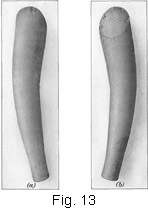30. Making the Arms for the Dress Form.— Attention should next be directed to the dress-form arms, the upper side of one of which is shown in Fig. 13 (a) and the under side in (b). Begin by tracing the sleeves along the pin lines that were made in the fitting; trim the seams off to within ½ in. of the pin lines; reverse the seams; and then baste the right sides together, so that the seams will come on the inside of the sleeve. Next, stitch just outside of the basting, beginning at the armhole and stitching downwards for both seams of the sleeve. Then clip each inside sleeve seam 2 in. above and 2 in. below the elbow, so that each sleeve will not appear drawn when it is turned, and press the seams. In pressing, care should be taken not to press creases in the sleeve and to keep the iron directly over each seam.
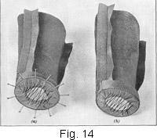31. With the sleeves in this condition, measure the lower edge of each sleeve lining, which should be ½ in. larger than the wrist itself, and then cut two pieces of cardboard, each to fit in the wrist end of each sleeve, making them as near the shape of the wrist as possible and of the exact size of the sleeve opening. Next, place each piece of cardboard thus cut out on the wrong side of a piece of the lining material, cut the material away to within ½ in. of the cardboard, and then turn the edge of the material over the cardboard, securing it in place with glue. The glue should be spread all around the outside edge of the cardboard, but care should be taken not to get any on the face of it, as the glue may show through the material and thus spoil its appearance. If it is not convenient to use glue, the edges may be held together with thread, as shown in Fig. 14; or, if desired, both glue and thread may be used.
Next, as shown in Fig. 14 (a), insert each covered cardboard into the wrist end of each sleeve and pin it in place. Then replace the pins with overcasting stitches made with buttonhole twist, keeping the stitches very close together so that the cardboard will be held in correct position, as shown in (b).
32. Next, turn each sleeve right side out, and proceed to pad, or fill, them. If any scraps of cotton are left from padding out the form, they may be torn into bits and utilized in filling; if there are no scraps, other cotton must be employed. Pad each sleeve by inserting a small handful of the cotton at a time, pushing it down into the sleeve and up close against the end, and packing it firmly in place. Do not try to put too much padding in at a time; rather, follow the plan just mentioned until nearly the entire sleeve is filled out and it assumes a smooth, even outline. If the outside of the sleeve appears to be rough or shows ridges as the work progresses, smooth them out very carefully by putting the hand inside the sleeve and then working the padding down until all irregularities are done away with. When the top of the sleeve is reached, do not pack the cotton in too tight, for it is necessary at this part to have the packing a trifle loose.
If ground cork, such as that used to pack grapes, is obtainable, the sleeves may be filled with it. In such a case, each sleeve should be filled with the cotton padding up to about 4 in. above the wrist, then enough of the cork should be put in to fill the sleeve up to the lower end of the armhole, and for the rest of the sleeve cotton should be used. Some persons prefer ground cork to cotton batting for stuffing the sleeves, as it gives a more pliable arm; also, an arm so filled has more weight than one padded entirely with cotton.
Next, as a finish for the upper part of each sleeve, cut a piece of paper to fit exactly in the sleeve opening at the top, and with this paper as a pattern cut out two pieces of the lining material, allowing a seam's width all the way around the pattern. Then trace around the pattern, turn the seam edge over at the traced line, and baste all the way around. Finally, overcast one oval piece to the top of each sleeve, so that the finished sleeves will appear as shown in Fig. 13 (b).
33. With each sleeve finished in the manner just explained, place a straight eye opposite each shoulder seam of the covered form at the top of the armhole, and then two eyes on each side of it, spacing them 1 ½ in. apart; also, across the top of each arm, place hooks as shown in Fig. 13 (b) to correspond with the eyes on the shoulders of the covered form. The hooks and eyes permit the arms to be hooked to the form when necessary, and to be removed when they are not in use. If the arms are very large, seven hooks and eyes, instead of five, may have to be used to hold the sleeves in correct position and to balance them properly.
HINTS ON THE CARE AND USE OF THE PADDED FORM
34. Care of the Padded Form.—A dress form covered and padded in the manner just explained should be kept as clean as possible so that there will be no danger of soiling dainty garments that may be fitted or draped on it. Therefore, for protecting the form from dust while it is not in use, a muslin or a calico sack similar to a pillow case should be made to slip over it. Few persons appreciate the necessity of keeping the dress form clean when it looks fresh and new; yet, if it is allowed to stand out where dust will settle on it, it will soon become so dirty as to be a nuisance when fitting anything that soils easily. The importance of providing a covering for it in the beginning should therefore not be disregarded.
If by chance the form should become dirty, a great deal of the dirt—in fact, all of the surface dirt—may be removed by covering the form entirely with magnesia, letting it stand for 48 hours, and then brushing it briskly with a whisk broom.
35. Placing Guide Lines on a Padded Form.—When a person possesses a waist, or blouse, that has a good neck line, an excellent plan is to put the waist on the padded dress form and outline the neck line on it with tailor's chalk or with basting thread. Then, in making waists in the future, it will be known exactly where to mark the line for the neck in fitting. Frequently, women say, "I didn't intend to get the neck so high," or "The neck is a little lower than I wanted it to be." Such occurrences will always be avoided if the neck line is marked in the manner just mentioned and then followed in making the garment. Square or pointed yokes to be used as a guide may also be outlined on the form if desired.
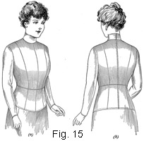36. Using a Padded Form for More Than One Person. Where there is no great difference in the size and shape of two or more members of a family, it is sometimes advisable to make one padded form answer for all. Under such circumstances, the form should be selected and padded in the manner just described to meet the requirements of the smallest of those who are to use it. Then, for each of the others, a covering should be cut and fitted as already explained. However, the bottom of this covering, as well as the top of the collar and the lower edge of the sleeves, should be finished with bias facing; also, the sleeves should be stitched in and hooks and eyes, spaced 1 ½ in. apart, should be sewed the full length of the opening at the back, so that the finished covering will appear as in Fig. 15, in which are shown a front view (a) and a back view (b) of the covering on a figure.
As a lining of this kind is used merely to slip on a form and thus give the lines of another figure, it is not necessary to finish the seams as in the tight-fitting lining already discussed. By sewing in the sleeves, as shown, the entire lining may be slipped on the padded form to which the arms are hooked, thus making it possible to utilize the arms, as well as the padded form made for a smaller person. If the cover is much larger than the padded form, it may be necessary to use tissue paper or cotton to fill out enough to give the desired size.
37. Galatea Skirt for a Padded Form.—An excellent plan in connection with a padded form is to provide for it a galatea skirt that may be used as a guide in skirt making. This galatea skirt, or form skirt, as it may be called, should be cut according to the plain foundation-skirt pattern and made with a seam at the center front, one at the center back, and one at each side; also, the hem should be turned so as to be perfectly even and of the desired length. The seams of the form skirt will serve as a guide in fitting a skirt that is being made, and it will be an easy matter to get the skirt length with accuracy. In addition, the work of making a skirt shorter or longer will be greatly simplified, for it will be merely a matter of following the bottom line of the form skirt.
Inexpensive unbleached muslin may be used for the form skirt if it is not convenient to use galatea; however, the advantages of using galatea are that it makes a better looking form and that it is firm enough to give a good, even line at the bottom. Then, too, there is not much danger of the galatea skirt stretching or becoming uneven at the lower edge.